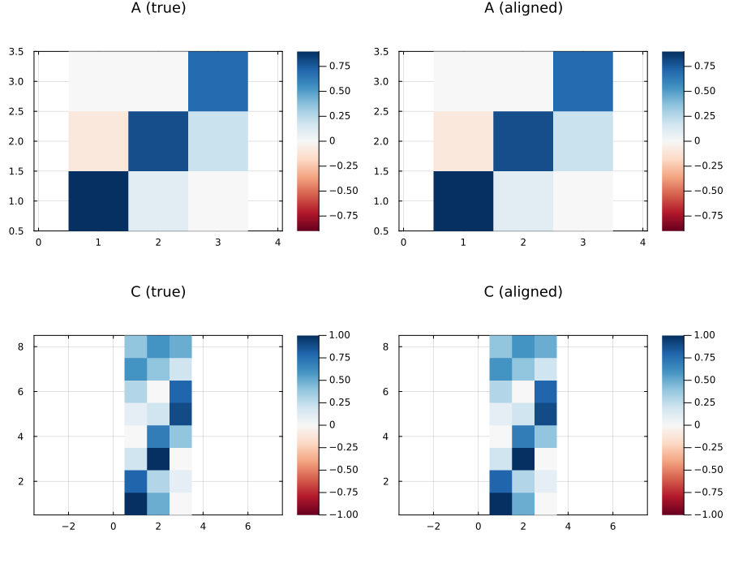

Non-identifiability of LDS coordinates
An LDS's latent coordinates are identifiable only up to an invertible change of basis. For any invertible $S$, the transformed model $(A', Q', C', x_0', P_0') = (S A S^{-1},\, S Q S^\top,\, C S^{-1},\, S x_0,\, S P_0 S^\top)$ is observationally equivalent: same likelihood, same predictions. Here we demonstrate the equivalence numerically and show how Procrustes alignment lets us compare fits "apples-to-apples".
using StateSpaceDynamics
using LinearAlgebra
using Random
using Plots
using Statistics
using StableRNGs
using Printf
rng = StableRNG(1234);Reference model
K_true = 3
D = 8
T = 200
A_true = [0.9 0.1 0.0;
-0.1 0.8 0.2;
0.0 0.0 0.7]
Q_true = 0.05 * Matrix(I(K_true))
b_true = zeros(K_true)
C_true = [1.0 0.5 0.0;
0.8 0.3 0.1;
0.2 1.0 0.0;
0.0 0.7 0.4;
0.1 0.2 0.9;
0.3 0.0 0.8;
0.6 0.4 0.2;
0.4 0.6 0.5]
d_true = zeros(D)
R_true = 0.1 * Matrix(I(D))
x0_true = zeros(K_true)
P0_true = 0.2 * Matrix(I(K_true))
true_lds = LinearDynamicalSystem(;
state_model=GaussianStateModel(A_true, Q_true, b_true, x0_true, P0_true),
obs_model=GaussianObservationModel(C_true, R_true, d_true),
latent_dim=K_true,
obs_dim=D,
fit_bool=fill(true, 6),
);
x_true, y_true = rand(rng, true_lds, T);Equivalent transformed copies
A handful of similarity transforms: orthogonal rotations, an axis swap, a permutation, and a non-orthogonal scaling. All produce models with the same likelihood as the reference.
function transform_lds(lds, S)
A_rot = S * lds.state_model.A * inv(S)
Q_rot = S * lds.state_model.Q * S'
C_rot = lds.obs_model.C * inv(S)
x0_rot = S * lds.state_model.x0
P0_rot = S * lds.state_model.P0 * S'
return LinearDynamicalSystem(;
state_model=GaussianStateModel(A_rot, Q_rot, b_true, x0_rot, P0_rot),
obs_model=GaussianObservationModel(C_rot, lds.obs_model.R, d_true),
latent_dim=size(A_rot, 1),
obs_dim=size(C_rot, 1),
fit_bool=fill(true, 6),
)
end
transforms = [
[cos(π/4) -sin(π/4) 0.0; sin(π/4) cos(π/4) 0.0; 0.0 0.0 1.0],
[1.0 0.0 0.0; 0.0 cos(π/2) -sin(π/2); 0.0 sin(π/2) cos(π/2)],
Matrix(qr(randn(rng, K_true, K_true)).Q),
[0.0 0.0 1.0; 0.0 1.0 0.0; 1.0 0.0 0.0],
Matrix(Diagonal([2.0, 0.5, -1.2])),
[0.0 1.0 0.0; 1.0 0.0 0.0; 0.0 0.0 1.0],
]
transform_names = [
"rot(1,2, 45°)", "rot(2,3, 90°)", "random orthogonal",
"axis swap (1↔3)", "scaling + sign", "permutation (1↔2)",
]
transformed_models = [transform_lds(true_lds, S) for S in transforms]6-element Vector{LinearDynamicalSystem{Float64, GaussianStateModel{Float64, Matrix{Float64}, Vector{Float64}}, GaussianObservationModel{Float64, Matrix{Float64}, Vector{Float64}}}}:
Linear Dynamical System:
------------------------
Gaussian State Model:
---------------------
State Parameters:
A = [0.85 0.15 -0.141; -0.05 0.85 0.141; 0.0 0.0 0.7]
Q = [0.05 0.0 0.0; 0.0 0.05 0.0; 0.0 0.0 0.05]
Initial State:
b = [0.0, 0.0, 0.0]
x0 = [0.0, 0.0, 0.0]
P0 = [0.2 0.0 0.0; 0.0 0.2 0.0; 0.0 0.0 0.2]
Dynamics input:
size(B) = (3, 0)
Gaussian Observation Model:
---------------------------
size(C) = (8, 3)
size(R) = (8, 8)
size(d) = (8,)
size(D) = (8, 0)
Parameters to update:
---------------------
x0, P0, A (and b, B), Q, C (and d, D), R
Linear Dynamical System:
------------------------
Gaussian State Model:
---------------------
State Parameters:
A = [0.9 6.12e-18 0.1; -6.12e-18 0.7 6.12e-18; -0.1 -0.2 0.8]
Q = [0.05 0.0 0.0; 0.0 0.05 0.0; 0.0 0.0 0.05]
Initial State:
b = [0.0, 0.0, 0.0]
x0 = [0.0, 0.0, 0.0]
P0 = [0.2 0.0 0.0; 0.0 0.2 0.0; 0.0 0.0 0.2]
Dynamics input:
size(B) = (3, 0)
Gaussian Observation Model:
---------------------------
size(C) = (8, 3)
size(R) = (8, 8)
size(d) = (8,)
size(D) = (8, 0)
Parameters to update:
---------------------
x0, P0, A (and b, B), Q, C (and d, D), R
Linear Dynamical System:
------------------------
Gaussian State Model:
---------------------
State Parameters:
A = [0.815 -0.0331 -0.0561; -0.106 0.791 0.179; 0.176 0.0346 0.794]
Q = [0.05 -1.39e-17 -1.73e-18; -1.39e-17 0.05 3.12e-17; 0.0 3.47e-17 0.05]
Initial State:
b = [0.0, 0.0, 0.0]
x0 = [0.0, 0.0, 0.0]
P0 = [0.2 -5.55e-17 -6.94e-18; -5.55e-17 0.2 1.25e-16; 0.0 1.39e-16 0.2]
Dynamics input:
size(B) = (3, 0)
Gaussian Observation Model:
---------------------------
size(C) = (8, 3)
size(R) = (8, 8)
size(d) = (8,)
size(D) = (8, 0)
Parameters to update:
---------------------
x0, P0, A (and b, B), Q, C (and d, D), R
Linear Dynamical System:
------------------------
Gaussian State Model:
---------------------
State Parameters:
A = [0.7 0.0 0.0; 0.2 0.8 -0.1; 0.0 0.1 0.9]
Q = [0.05 0.0 0.0; 0.0 0.05 0.0; 0.0 0.0 0.05]
Initial State:
b = [0.0, 0.0, 0.0]
x0 = [0.0, 0.0, 0.0]
P0 = [0.2 0.0 0.0; 0.0 0.2 0.0; 0.0 0.0 0.2]
Dynamics input:
size(B) = (3, 0)
Gaussian Observation Model:
---------------------------
size(C) = (8, 3)
size(R) = (8, 8)
size(d) = (8,)
size(D) = (8, 0)
Parameters to update:
---------------------
x0, P0, A (and b, B), Q, C (and d, D), R
Linear Dynamical System:
------------------------
Gaussian State Model:
---------------------
State Parameters:
A = [0.9 0.4 0.0; -0.025 0.8 -0.0833; 0.0 0.0 0.7]
Q = [0.2 0.0 0.0; 0.0 0.0125 0.0; 0.0 0.0 0.072]
Initial State:
b = [0.0, 0.0, 0.0]
x0 = [0.0, 0.0, 0.0]
P0 = [0.8 0.0 0.0; 0.0 0.05 0.0; 0.0 0.0 0.288]
Dynamics input:
size(B) = (3, 0)
Gaussian Observation Model:
---------------------------
size(C) = (8, 3)
size(R) = (8, 8)
size(d) = (8,)
size(D) = (8, 0)
Parameters to update:
---------------------
x0, P0, A (and b, B), Q, C (and d, D), R
Linear Dynamical System:
------------------------
Gaussian State Model:
---------------------
State Parameters:
A = [0.8 -0.1 0.2; 0.1 0.9 0.0; 0.0 0.0 0.7]
Q = [0.05 0.0 0.0; 0.0 0.05 0.0; 0.0 0.0 0.05]
Initial State:
b = [0.0, 0.0, 0.0]
x0 = [0.0, 0.0, 0.0]
P0 = [0.2 0.0 0.0; 0.0 0.2 0.0; 0.0 0.0 0.2]
Dynamics input:
size(B) = (3, 0)
Gaussian Observation Model:
---------------------------
size(C) = (8, 3)
size(R) = (8, 8)
size(d) = (8,)
size(D) = (8, 0)
Parameters to update:
---------------------
x0, P0, A (and b, B), Q, C (and d, D), R
The invariant under any invertible $S$ is the marginal log-likelihood $\log p(y)$ (the latents are integrated out, so the volume Jacobian cancels). loglikelihood computes it exactly for a Gaussian LDS by running the Kalman filter and summing the one-step-ahead predictive densities. Note that the joint log p(x, y) at the smoothed mean (see joint_loglikelihood) is gauge-invariant only for orthogonal $S$; the diagonal scaling in transforms would shift it by $T \log |\det S|$.
ll_orig = loglikelihood(true_lds, y_true)
@printf("reference log p(y): %.6f\n", ll_orig)
for (name, S, model) in zip(transform_names, transforms, transformed_models)
ll = loglikelihood(model, y_true)
@printf("%-22s ΔLL = %.3e cond(S) = %.2f\n",
name, abs(ll - ll_orig), cond(S))
endreference log p(y): -725.349854
rot(1,2, 45°) ΔLL = 0.000e+00 cond(S) = 1.00
rot(2,3, 90°) ΔLL = 0.000e+00 cond(S) = 1.00
random orthogonal ΔLL = 0.000e+00 cond(S) = 1.00
axis swap (1↔3) ΔLL = 0.000e+00 cond(S) = 1.00
scaling + sign ΔLL = 0.000e+00 cond(S) = 4.00
permutation (1↔2) ΔLL = 0.000e+00 cond(S) = 1.00Procrustes alignment
To compare two equivalent fits visually we solve $\hat S = \arg\min_S \lVert S X_\text{rot} - X_\text{orig} \rVert_F$ over orthogonal $S$, via SVD of $X_\text{orig} X_\text{rot}^\top$.
function procrustes_rotation(X, Y)
F = svd(Y * X')
return F.U * F.Vt
end
S_idx = 3
m_rot = transformed_models[S_idx]
x_orig, _ = smooth(true_lds, y_true)
x_rot, _ = smooth(m_rot, y_true)
S_hat = procrustes_rotation(x_rot, x_orig)
state_align_relerr = norm(S_hat * x_rot - x_orig) / norm(x_orig)
A_aligned = S_hat * m_rot.state_model.A * S_hat'
C_aligned = m_rot.obs_model.C * S_hat'
ΔA = norm(A_true - A_aligned)
ΔC = norm(C_true - C_aligned)
@printf("Procrustes residual: %.3e\n", state_align_relerr)
@printf("After alignment: ‖ΔA‖ = %.3e, ‖ΔC‖ = %.3e\n", ΔA, ΔC)
lim_A = max(maximum(abs, A_true), maximum(abs, A_aligned))
lim_C = max(maximum(abs, C_true), maximum(abs, C_aligned))
p_align = plot(layout=(2, 2), size=(900, 700))
heatmap!(p_align, A_true; title="A (true)", subplot=1, color=:RdBu,
clims=(-lim_A, lim_A), aspect_ratio=:equal)
heatmap!(p_align, A_aligned; title="A (aligned)", subplot=2, color=:RdBu,
clims=(-lim_A, lim_A), aspect_ratio=:equal)
heatmap!(p_align, C_true; title="C (true)", subplot=3, color=:RdBu,
clims=(-lim_C, lim_C), aspect_ratio=:equal)
heatmap!(p_align, C_aligned; title="C (aligned)", subplot=4, color=:RdBu,
clims=(-lim_C, lim_C), aspect_ratio=:equal)
What is identifiable
Even though individual coordinates are gauge-dependent, three things are invariant under similarity transforms: eigenvalues of $A$ (and therefore modal timescales), the column space of $C$ (up to subspace angles), and all predictive metrics.
function subspace_angles_deg(C1, C2)
Q1 = qr(C1).Q[:, axes(C1, 2)]
Q2 = qr(C2).Q[:, axes(C2, 2)]
σ = clamp.(svdvals(Q1' * Q2), -1.0, 1.0)
return acos.(σ) .* (180 / π)
end
λ_true = sort(abs.(eigvals(true_lds.state_model.A)))
for (name, model) in zip(transform_names, transformed_models)
λ = sort(abs.(eigvals(model.state_model.A)))
θ = subspace_angles_deg(C_true, model.obs_model.C)
@printf("%-22s max|Δ|λ|| = %.2e max angle(C) = %.3f°\n",
name, maximum(abs.(λ_true - λ)), maximum(θ))
endrot(1,2, 45°) max|Δ|λ|| = 0.00e+00 max angle(C) = 0.000°
rot(2,3, 90°) max|Δ|λ|| = 0.00e+00 max angle(C) = 0.000°
random orthogonal max|Δ|λ|| = 2.22e-16 max angle(C) = 0.000°
axis swap (1↔3) max|Δ|λ|| = 0.00e+00 max angle(C) = 0.000°
scaling + sign max|Δ|λ|| = 0.00e+00 max angle(C) = 0.000°
permutation (1↔2) max|Δ|λ|| = 0.00e+00 max angle(C) = 0.000°This page was generated using Literate.jl.